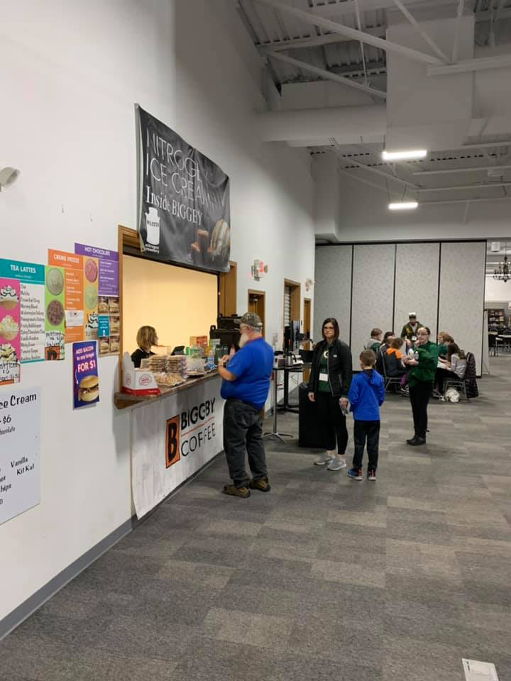

Welcome to my portfolio
Go to my previous list of jobs
Here I will say things about me like whats my contact info, what jobs I previously had over the year and other stuff about me like where I went to school or what skills do I have. any little thing about me I can think of will be on this portfolio (and I do mean little as I don't have much to say about myself)
About Me
me
Bio
Name: Mavrick "Mav" Kickhaver
Birthdate: March 21st 1999
Current Age: 22
Family: My family consists of my Mother, Father, and Brother
Education
 The school district I went to
The school district I went to
I previously attended school in the D.C Everest school district where I graduated in 2018.
I currently am a student in North Central Technical College in the web design program and will graduate from there when I get 64 credits (currently I have 51)
Skills
I've learned some skills during my years at North Central Tech although I am not an expert in any of those things yet
Some skills I learned is how to do HTML, CSS, and Javascript and although my HTML, and CSS skills are pretty good I still need to work on my javascript
Below is the progress of how good I feel I am with these
HTML learning progress
CSS learning progress
JavaScript learning progress
Besides that I also learned how to use adobe apps such as AdobeXD AdobeIllustrator, AdobeAnimations, and AdobeDreameaver. Now what I make isnt expert level but I'd say there decent
Goals
1. Finish College
2. Get a house for my self as I still live with my parents
3. Become a game designer which has been my dream job for a few years
Facts about me
During the 8th-12th grade I was a member of my schools gaming club
My favorite shows are reality shows like Survivor, Big Brother, and The Amazing Race
The pets I own are 6 English cream golden retrievers named Bentley, Wynn, Trump, Monty, Aria, and Bailey and 1 cat named dusty
Hobbies
My hobbies include playing video games like minecraft, pokemon, or mario. I also love going on the internet but sometimes I do go outside to burn off energy but other than that Im not very active
Volunteer Work

The event I volunteered in
During my schools gaming club convention while I was still in school I worked at the concession stand for about 2 hours for 1-2 days
I also volunteered at a food drive where I sorted food items into bins, I was there for a few hours.